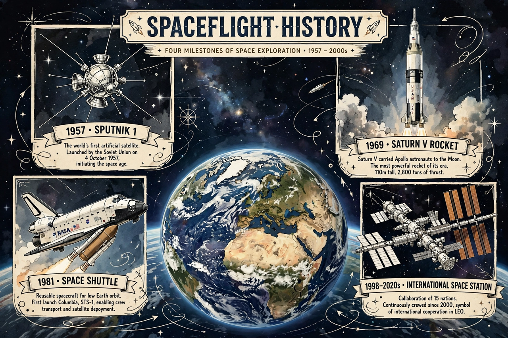

Timeline of spaceflight
From Wikipedia, the free encyclopedia

Milestones of spaceflight.This timeline of spaceflight records the milestones of human exploration of space, from the first artificial satellite to the crewed lunar programme of the 2020s. Spaceflight began as an offshoot of missile development: the German V-2 first reached space in 1944, and both superpowers built their early programmes on its technology.
Firsts, 1957–1969
1957: Sputnik 1, the first artificial satellite (USSR). 1961: Yuri Gagarin becomes the first human in space aboard Vostok 1; Alan Shepard makes the first American (suborbital) flight. 1962: John Glenn orbits Earth. 1963: Valentina Tereshkova, first woman in space. 1965: Alexei Leonov performs the first spacewalk, on Voskhod 2. 1966: Luna 9 makes the first soft landing on the Moon. 1968: Apollo 8 crew are the first to orbit the Moon and photograph Earthrise. 1969: Apollo 11 — Neil Armstrong and Buzz Aldrin land on the Moon.
Stations and shuttles, 1971–2011
1971: Salyut 1, first space station, under the Salyut programme; its visiting crew dies on Soyuz 11. 1975: the Apollo–Soyuz Test Project docks American and Soviet craft. 1981: first Space Shuttle flight. 1986: Challenger disaster; Mir core launches. 1990: Hubble Space Telescope deployed. 1998: first International Space Station modules launched. 2003: Columbia disaster; Yang Liwei makes China the third nation to fly humans independently, aboard Shenzhou. 2011: the Shuttle retires.
Commercial era, 2012–present
2012: SpaceX Dragon becomes the first commercial vehicle to berth with the ISS. 2015: a Falcon 9 booster lands — orbital-class recovery becomes practical. 2020: Crew Dragon Demo-2 restores US crewed launch capability. 2021: first flights of suborbital tourism vehicles; China's Tiangong space station begins assembly. 2022: Artemis I flies uncrewed around the Moon behind the Space Launch System. The coming years are expected to bring crewed Artemis lunar missions, the Lunar Gateway station, and test flights of fully reusable systems such as SpaceX Starship.
See also
Space Race · Apollo program · International Space Station · Spaceflight